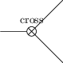
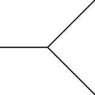

cross
[1]:
from pyfeyn2.render.all import AllRender
ar = AllRender().demo_vertex("cross")
tikz:

pyx:
pyx failed:
Traceback (most recent call last):
File "/home/apn/data/de.neuwirthinformatik.Alexander/Development/git/pyfeyn2/pyfeyn2/render/all.py", line 86, in render
render(fd).render(dirpath + "/" + name + ".pdf", **dynarg)
File "/home/apn/data/de.neuwirthinformatik.Alexander/Development/git/pyfeyn2/pyfeyn2/render/pyx/pyxrender.py", line 43, in render
nl = NamedLine[l.type](Point(l.x, l.y), Point(tar.x, tar.y))
KeyError: 'line'
feynmp:
feynmp failed:
Traceback (most recent call last):
File "/home/apn/data/de.neuwirthinformatik.Alexander/Development/git/pyfeyn2/pyfeyn2/render/all.py", line 86, in render
render(fd).render(dirpath + "/" + name + ".pdf", **dynarg)
File "/home/apn/data/de.neuwirthinformatik.Alexander/Development/git/pyfeyn2/pyfeyn2/render/latex/feynmp.py", line 173, in __init__
self.set_feynman_diagram(fd)
File "/home/apn/data/de.neuwirthinformatik.Alexander/Development/git/pyfeyn2/pyfeyn2/render/latex/feynmp.py", line 177, in set_feynman_diagram
self.set_src_diag(NoEscape(feynman_to_feynmp(fd)))
File "/home/apn/data/de.neuwirthinformatik.Alexander/Development/git/pyfeyn2/pyfeyn2/render/latex/feynmp.py", line 110, in feynman_to_feynmp
tttype = type_map[l.type]
KeyError: 'line'
feynman:
feynman failed:
Traceback (most recent call last):
File "/home/apn/data/de.neuwirthinformatik.Alexander/Development/git/pyfeyn2/pyfeyn2/render/all.py", line 86, in render
render(fd).render(dirpath + "/" + name + ".pdf", **dynarg)
File "/home/apn/data/de.neuwirthinformatik.Alexander/Development/git/pyfeyn2/pyfeyn2/render/mpl/feynmanrender.py", line 131, in render
for style in get_styled_lines(self.fd, l):
File "/home/apn/data/de.neuwirthinformatik.Alexander/Development/git/pyfeyn2/pyfeyn2/render/mpl/feynmanrender.py", line 35, in get_styled_lines
for i in namedlines[p.type]:
KeyError: 'line'
dot:
dot failed:
Traceback (most recent call last):
File "/home/apn/data/de.neuwirthinformatik.Alexander/Development/git/pyfeyn2/pyfeyn2/render/all.py", line 86, in render
render(fd).render(dirpath + "/" + name + ".pdf", **dynarg)
File "/home/apn/data/de.neuwirthinformatik.Alexander/Development/git/pyfeyn2/pyfeyn2/render/latex/dot.py", line 72, in __init__
self.set_feynman_diagram(fd)
File "/home/apn/data/de.neuwirthinformatik.Alexander/Development/git/pyfeyn2/pyfeyn2/render/latex/dot.py", line 76, in set_feynman_diagram
self.src_dot = feynman_to_dot(
File "/home/apn/data/de.neuwirthinformatik.Alexander/Development/git/pyfeyn2/pyfeyn2/interface/dot.py", line 49, in feynman_to_dot
thestyle = styler(l)
File "/home/apn/data/de.neuwirthinformatik.Alexander/Development/git/pyfeyn2/pyfeyn2/render/latex/dot.py", line 33, in stylize_connect
style = 'style="{}",texmode="raw"'.format(map_feyn_to_tikz[c.type])
KeyError: 'line'
mpl:
mpl failed:
Traceback (most recent call last):
File "/home/apn/data/de.neuwirthinformatik.Alexander/Development/git/pyfeyn2/pyfeyn2/render/all.py", line 86, in render
render(fd).render(dirpath + "/" + name + ".pdf", **dynarg)
File "/home/apn/data/de.neuwirthinformatik.Alexander/Development/git/pyfeyn2/pyfeyn2/render/mpl/mpl.py", line 143, in render
namedlines[l.type](idtopos[l.id], idtopos[l.target])
KeyError: 'line'
ascii:
ascii failed:
Traceback (most recent call last):
File "/home/apn/data/de.neuwirthinformatik.Alexander/Development/git/pyfeyn2/pyfeyn2/render/all.py", line 86, in render
render(fd).render(dirpath + "/" + name + ".pdf", **dynarg)
File "/home/apn/data/de.neuwirthinformatik.Alexander/Development/git/pyfeyn2/pyfeyn2/render/text/asciipdf.py", line 25, in render
ASCIIRender.render(self, file, show, resolution, width, height)
File "/home/apn/data/de.neuwirthinformatik.Alexander/Development/git/pyfeyn2/pyfeyn2/render/text/ascii.py", line 156, in render
self.namedlines[l.type]().draw(pane, Point(l.x, l.y), tar, **fmt)
KeyError: 'line'
unicode:
unicode failed:
Traceback (most recent call last):
File "/home/apn/data/de.neuwirthinformatik.Alexander/Development/git/pyfeyn2/pyfeyn2/render/all.py", line 86, in render
render(fd).render(dirpath + "/" + name + ".pdf", **dynarg)
File "/home/apn/data/de.neuwirthinformatik.Alexander/Development/git/pyfeyn2/pyfeyn2/render/text/unicodepdf.py", line 64, in render
UnicodeRender.render(self, file, show, resolution, width, height)
File "/home/apn/data/de.neuwirthinformatik.Alexander/Development/git/pyfeyn2/pyfeyn2/render/text/ascii.py", line 156, in render
self.namedlines[l.type]().draw(pane, Point(l.x, l.y), tar, **fmt)
KeyError: 'line'
